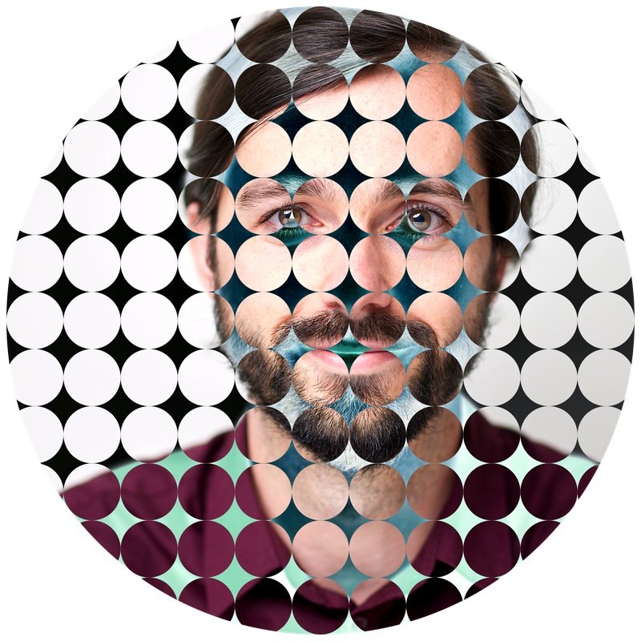
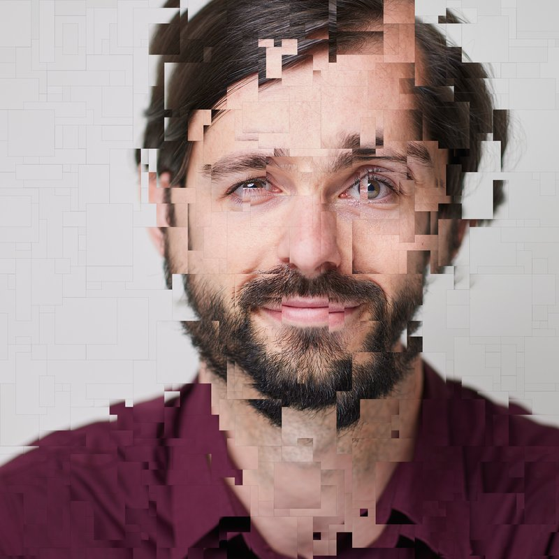

Extra
Speeltuin
Niet alles hoeft een puzzel te zijn. Hier staan bewerkingen om gewoon mee te spelen: upload een foto, kies een bewerking en download wat je mooi vindt. Je foto wordt niet bewaard. Zin om zelf te tekenen? Op Jouw Kunsd staan de tekenpuzzels.
Kies Je Foto
Eén keer uploaden is genoeg: dezelfde foto werkt voor alle bewerkingen hieronder.
Negative Circles
Je foto vol cirkels. In de cirkels zie je de foto zoals hij is, ertussen het negatief. En het geheel is zelf ook een rondje: kies zelf welk rondje uit je foto.

Square Drift
Honderden rechthoekjes uit je foto, gekopieerd en een stukje verder van het midden weer geplakt. Het midden blijft heel, naar buiten toe valt je foto uiteen. Elke keer net anders: klik nog eens voor een nieuwe versie.

RedBlack Dots
Je foto in rode en zwarte stippen, met een grafisch, poster-achtig effect.